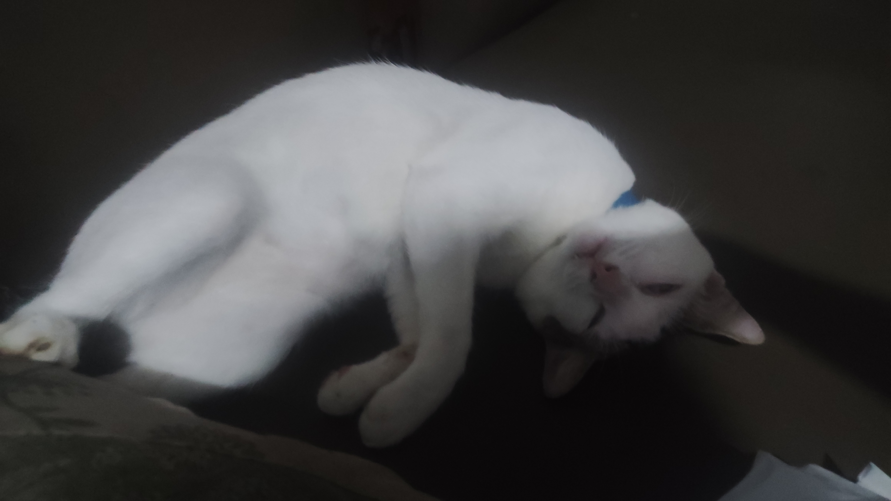
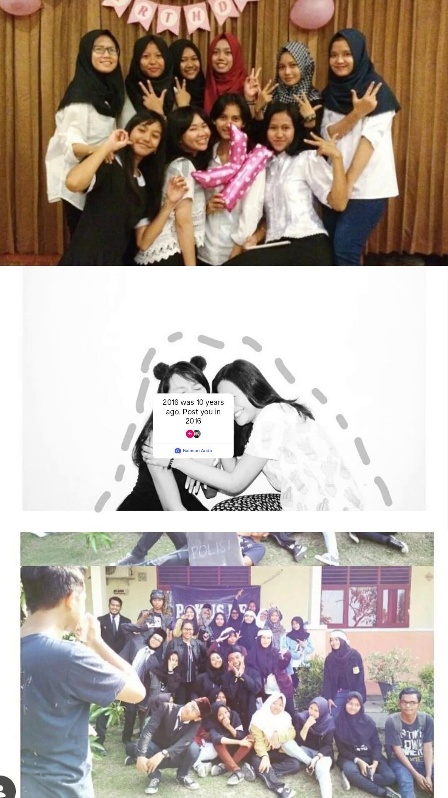
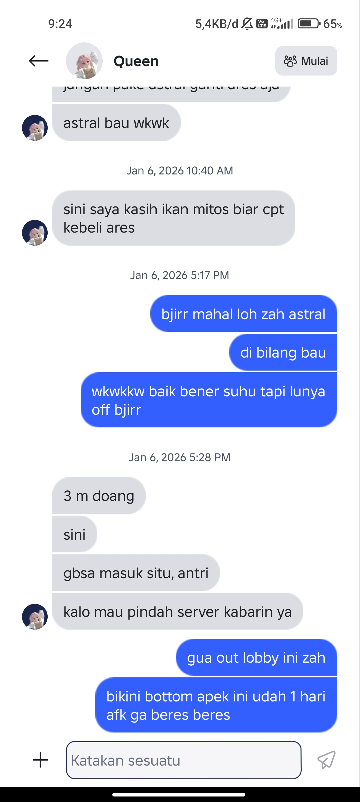
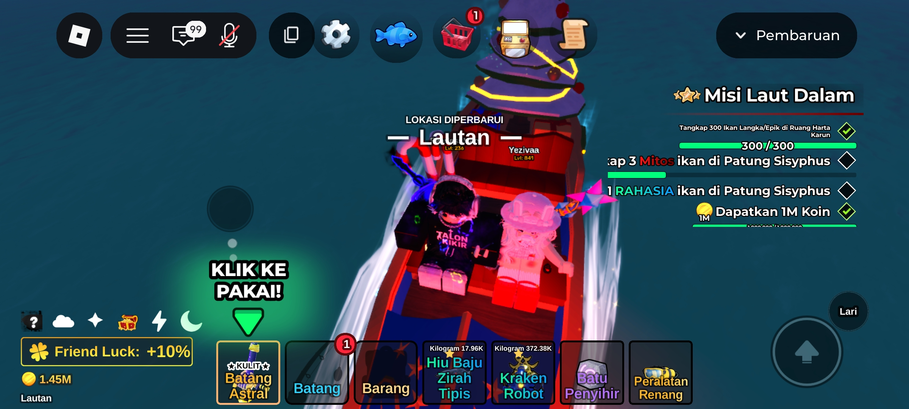

Laporan Tim SAR: Korban Ujan 🌧️
Zah, lu tau nggak? Gua beneran lagi hopeless liat laptop gua. Laptop saksi bisu gua skripsian sampe lulus, revisi dosen, sampe mabar bareng lu...
Sekarang dia GUGUR dengan tidak estetik. Padahal dipake AFK berjam-jam nemenin lu mah dia aman aja Zah. Eh, tau-taunya malah cedera parah kecipratan air ujan dari jendela kamar gua pas lagi asik nungguin lu.
"Masa iya gua mau nyalahin ujan? Ya kali gua mau marahin ujan wkwk! Tapi ya sudahlah, nemenin lu AFK mah laptop meledak sekalipun gua jabanin! 🗿"
Ruby Gemstone vs Ruby KW 💎
Gua pikir lu hanyut di Tropical Grove sampe gua panik bikin script sepanjang ini gara-gara notif roblox gua mati apa hp gua yang udah minta ganti🗿. Padahal lu lagi ambisi cari Lochness ya?
Gua dapet Ruby sih, tapi ya Ruby KW wkwk bukan Ruby Gemstone yang lu cari. Maafin hoki gua yang setengah mateng ini Zah.
"Lu sibuk cari Lochness, gua sibuk bikin kodingan biar kerja makin mudah dan ada waktu buat mabar itu juga kalo lu mau🗿. Lu dapet ikan sc, gua cuma dapet lose streak ML! 🗿"
Ratu Notif & Pangeran Sabar 👑
Gua bales pake script mulu ke lu di DM IG, apalagi kalo di WA lu Ratu kali Zah nomor gua juga pasti lu apal karna script gua selalu kasih nomor.
Tapi emang agak susah ya dapetin notif WA dari lu, tapi gua ga hopeless kaya lu Zah wkwkw. Nyindir dikit nggak apa-apa lah ya, nyindir tapi sebenernya beneran tulus!
"HP gua emang udah minta pensiun dengan cara halus gara-gara notif ga masuk bajingan, tapi gua nggak bakal pernah pensiun buat nungguin lu! 🗿"
Majikan Tragis, Kucing pun Teler 🐈⬛
Zah, lu liat kucing gua ini... Dia aja sampe teler dan pasrah liat majikannya seharian begadang cuma buat benerin script dan nungguin notif dari lu. 🗿
"Saking panjang dan penuh dramanya kodingan ini, kucing gua pun ikut 'hopeless' liat perjuangan gua. Maaf ya Zah, semoga lu nggak ketiduran juga pas baca ini kayak kucing gua wkwk!"
The Legendary 2016 🌸
Gua liat story ini... Gila Zah, zaman sekolah lu santai banget ya muka dan gaya fotonya. Wibu tercantik angkatan 2016 emang damage-nya permanen!
Gua harap lu tetep bisa senyum kayak di foto ini, walaupun hidup sekarang udah nggak sesantai dulu.
Track Record Awal 💬

Inget nggak awal kita asik di DM? Gua simpen semua lho. Gua nggak mau kenangan ini 'hanyut' kayak laptop skripsi gua wkwk. Lu itu notifikasi favorit gua tiap hari Zah.
Nasib Akai di Tangan Legend ⚔️
Gua bela-belain login ML lagi demi bisa nyusul pangkat lu yang udah Legend cepet bener. Tapi gua yang masih GM IV ini malah jadi bulan-alan di Land of Dawn.
"Dapet Gold MVP sih sering, tapi LOSE STREAK-nya lebih sering lagi! Kalah terus karena nggak ada lu yang nemenin gua tabrak-tabrak musuh. Emosi gua udah ngalahin beban hidup! 🗿"
Jimat Hoki Ares Rod 🎣
 Inget ga cgat ini pas lu rela kasih ikan mitos buat beli ares Rod kata lu astral bau haha?gua kira chat itu becanda taunya beneran,di ajarin di ajakin naik kapal liat momen foto ini pas mabar,tapi karna beda misi di tinggal dah wwkwkw, Sekarang Ares gua udah gacor, ngekos 2 hari di lost isle udah lulus misi ghostfin,terus hopeless lagi misi element, tapi yang jadi jimat hokinya malah ngilang cari Lochness wkwk.
Misi Penebusan Janji dari hati gua yang paling dalam 🎁
Gua sadar, gua udah banyak janji ke lu tapi eksekusinya agak 'becanda'. Inget script ultah kemarin? Kuenya cuma GIF doang. Terus janji boneka, eh malah lu-nya nggak suka atau belum siap nerima barang dari gua?
"Bukannya gua boros ya Zah, tapi ada rezeki aja dari project kodingan gua kemarin. Jadi gua kepikiran buat kasih lu Skin Rod Black Hole atau Bunga Abadi-nya biar kita SAMAAN pas mancing nanti!"
Lu kalo mau bikin kodingan biar kerja lu makin mudah biar bisa mabar gua jabanin Zah! Apa sih yang enggak buat Queen gua mah! 🗿
"Maafin abang-abangan lu yang rada kurang peka ini Zah. Gua nggak mau janji gua cuma jadi 'revisi' yang nggak kelar-kelar kayak skripsi gua dulu."
Protokol Kesehatan Anti-Ghosting ⛈️
Zah, ujan sekarang lagi nggak ada akhlak. Lu liat sendiri kan, laptop saksi bisu skripsi gua aja sampe tewas cuma gara-gara kecipratan doang? Gua nggak mau lu juga ikut-ikutan tumbang gara-gara nekat nerjang ujan.
Tolong ya, jangan sok jagoan nerjang badai cuma demi beli seblak. Kalau lu sakit, yang pusing bukan cuma dokter, tapi gua juga bakal kena mental karena nggak ada lagi 'notifikasi' paling gua tunggu tiap hari.
"Cukup laptop gua aja yang almarhum (semoga cuma mati suri sih), lu-nya jangan sampe drop! Kalau ngerasa sedih, lagi mendung hatinya, atau butuh sandaran, cerita aja ke gua. Gua emang bukan ikan sc Lochness yang lu cari, tapi gua adalah 'Abang-abangan 24 Jam' yang siap dengerin curhatan lu sampe lu senyum lagi wkwk! 🗿"
Inget ya Queen: Minum vitamin, pake jaket, dan jangan lupa kabarin gua. Biar gua tau kalau 'Jimat Hoki' gua ini tetep sehat walafiat buat mabar nanti!
Hutang Lunas, Mabar Gas! ✅
Zah, ikutin aja kemauan lu, nikmatin hidup. Masalah jangan disimpen sendiri, ada gua abang-abangan lu yang siap 24 jam buat dengerin lu.
Gua tunggu di private server. Jangan kelamaan keburu ganti lagi rodnya wwkwk, nanti ava Talon Kikir gua hanyut beneran nyariin lu!